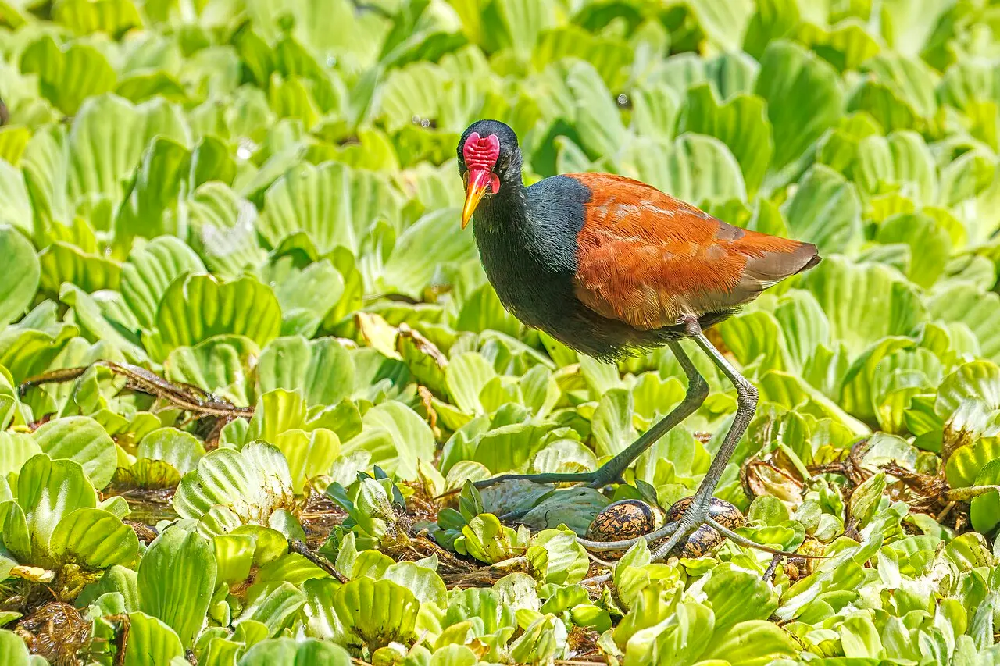
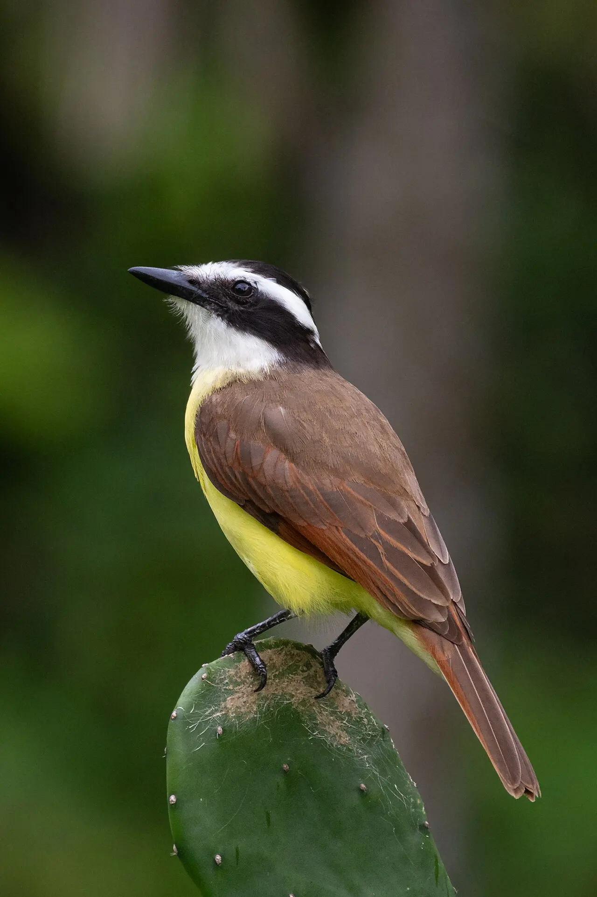
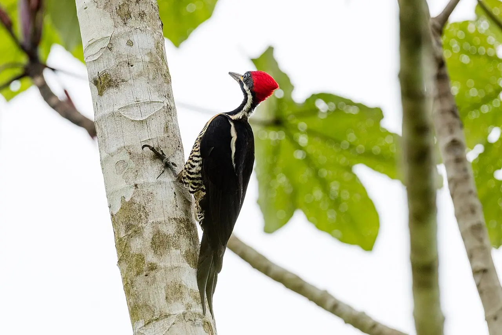
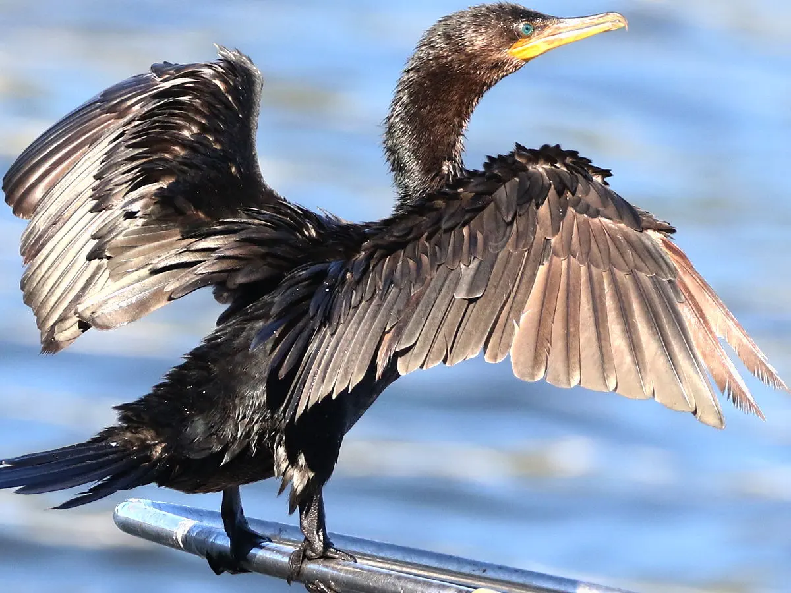
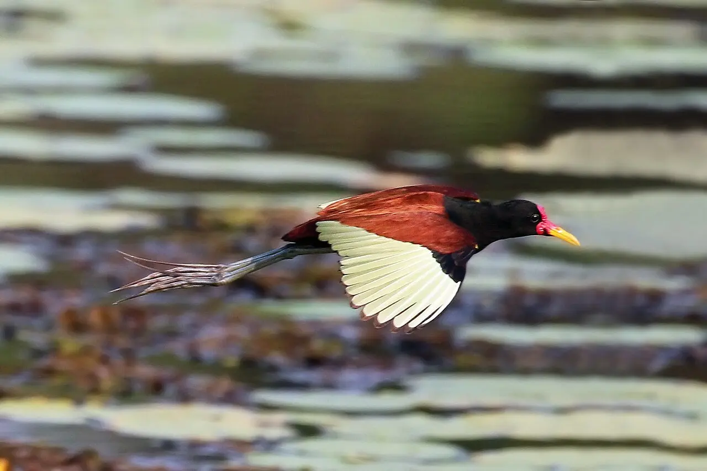
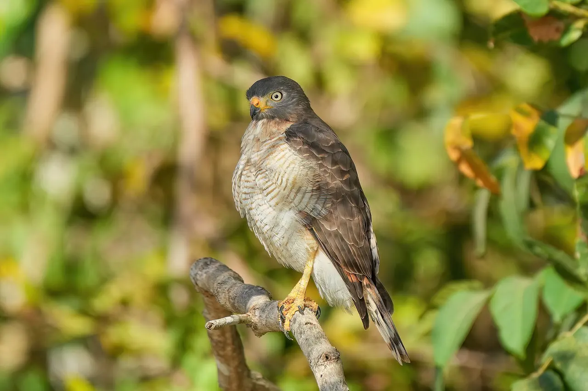

Módulo 4 Aula 18
Pés e pernas
Os pés de uma ave também dizem muito sobre o modo de vida dela. Quatro dedos, muitas formas.
- Como os dedos se organizam em cada tipo de pé
- Que tipo de pé cada modo de vida pede
- Como reconhecer um pé pela silhueta

Ave da aula
Jaçanã Jacana jacana
Tipos de pé
Quase todas as aves têm quatro dedos. O que muda é a posição de cada um e o que existe entre eles. Escolha um tipo. Os desenhos são esquemáticos, vistos de cima, com os dedos para cima.

Três dedos à frente, um atrás
É o pé típico de quem pousa em galhos, como os passeriformes[1]. Os dedos seguram o galho como uma pinça.
Exemplo: bem-te-vi.

Dois dedos à frente, dois atrás
Muito comum em aves que trepam e agarram, como papagaios e pica-paus[2].
Exemplo: pica-pau-de-banda-branca (Dryocopus lineatus).

Dedos ligados por membrana
Pés com membranas entre os dedos ajudam a nadar, na superfície ou embaixo d'água. Surgiram várias vezes em grupos de aves aquáticas[3].
Exemplo: biguá.
Dedos com lobos
Em vez de uma membrana contínua, cada dedo tem lobos de pele. Os lobos ajudam a empurrar a água e se dobram para trás quando a ave levanta o pé para andar[4]. É o caso da galinha-d'água, que existe no Brasil.

Dedos e garras longos
As jaçanãs têm garras longas e retas, para andar sobre a vegetação flutuante[6]. Os dedos compridos espalham o peso e evitam que a ave afunde.

Garras fortes
Aves de rapina têm dedos fortes e garras curvas e pontudas, com que agarram e prendem a presa[5]. O gavião-carijó, da foto, é um exemplo.
Que pé é este?
Combine cada modo de vida com o tipo de pé mais provável.
Pica-pau, agarrado ao tronco
Biguá, nadando
Jaçanã, sobre plantas flutuantes
Palavras novas
Teste rápido
Sem nota. Se errar, tente de novo.
Um pé anisodáctilo tem:
Qual ave costuma ter pé zigodáctilo?
Para que servem os dedos muito longos da jaçanã?
Referências e leitura complementar
Onde conferir o que foi dito nesta aula. Os números entre colchetes no texto levam a estas fontes. Os links abrem em outra aba.
- AnisodactylyEncyclopaedia Britannica · inglêsPé com três dedos para a frente e um para trás.
- ZygodactylyEncyclopaedia Britannica · inglêsPé com dois dedos para a frente e dois para trás.
- Webbed Feet Are an Evolutionary HitAudubon · inglêsPés com membranas surgiram várias vezes nas aves aquáticas.
- Better Know a Bird: The American Coot and Its Wonderfully Weird FeetAudubon Magazine · inglês · leitura complementarDedos lobados: um tipo de pé de nadador.
- All About Raptor Feet: A Tour of Talons and ClawsBird Academy · Cornell Lab of Ornithology · inglêsGarras e pés de aves de rapina.
- JacanaEncyclopaedia Britannica · inglêsAs jaçanãs têm garras longas e retas para andar sobre vegetação flutuante.
Os endereços foram abertos e conferidos em 29/09/2026. Alguns sites de revistas científicas e de órgãos oficiais exigem verificação humana e não puderam ser testados por robô. Sites externos podem mudar ou sair do ar.
Para levar
Em três frases
- A maioria das aves tem quatro dedos, e a forma de organizá-los muda com o modo de vida.
- Pousar e trepar, nadar, andar sobre plantas flutuantes e agarrar presas pedem pés diferentes.
- Você pode reconhecer o grupo de uma ave pelo desenho do pé.